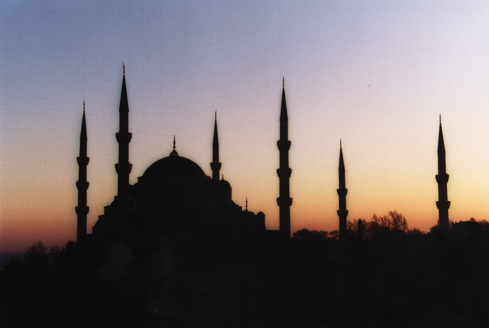
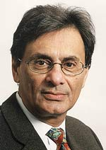
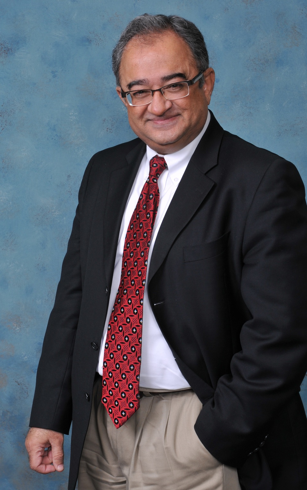

Clash of Civilizations: Assimilation & Religion

Conflict and divisions of the human race are often dictated by cultural identity and religion. Religious and cultural differences are becoming more prominent in today's society as the developed world sees increased numbers of immigrants that practice different faiths and bring with them different cultural values than the regions' natives. The question that must be addressed is whether these new cultures should be tolerated, or even celebrated, in order to create a cultural mosaic, or if immigrants should be forced into a ‘melting pot’ situation where assimilation is encouraged.
—Carol Drumm and Colin Tweel
Born in Hyderabad, India, the oldest of six children, to a construction company proprietor, Siddiqui enjoyed what he characterizes as a secure and affectionate, "middle- to upper-class" childhood. At Osmania University in Hyderabad he earned degrees in science and journalism. In 1963, he joined the Press Trust of India as a reporter and copy editor. Siddiqui left journalism when his father fell ill to run his company, which he did from his father's death in 1965 until it closed in 1967. While at the Press Trust he met Roland Michener, then Canada's High Commissioner to India who encouraged him to immigrate to Canada. By 1968 he had taken a job at the Brandon Sun in Brandon, Manitoba, reporting on municipal and provincial politics from 1968 to 1978. In 1978, he joined the Toronto Star, becoming foreign affairs analyst in 1979, news editor in 1982 and national editor in 1985. From 1985 to 1990, Siddiqui was National Editor, responsible for coverage of federal and provincial affairs. From 1990 to 1998, Siddiqui was the Star's editorial page editor, and on his departure from that position, he was given the title of "editor emeritus" and a twice-weekly column, which focused on national and international politics as well as cultural and Muslim issues. Siddiqui has written from a left-of-centre perspective on such issues as: the war in Iraq and terrorism. During his tenure The Star advocated a distinct constitutional status for Quebec and protection of French minorities outside Quebec.
He is the past president of PEN Canada and chair of International PEN's Writers-in-Exile Network. He is on the board of directors of the Calmeadow Foundation (a microcredit lender), the Canadian Club of Toronto, and the advisory board of the Ryerson University School of Journalism. Siddiqui has authored Being Muslim; edited An English Anthology of Modern Urdu Poetry (1988); assisted in Christopher Ondaatje's Sindh Revisited (1996), following the footsteps of Victorian explorer Sir Richard Burton; and contributed to Canada and Sept. 11, published by the University of Calgary (2002) and Drawing Fire: The State of Political Cartooning (1998), a colloquium of North America's top cartoonists and editors, at the American Press Institute.
He shared a 1983 National Newspaper Award for spot news reporting. In 1992 and column writing in 1998. Siddiqui received a Professional Man of the Year award from Indo Canadian Chamber of Commerce, and a media award from the Canadian Islamic Congress. In 2000, he became a member of the Order of Ontario, for crafting "a broader definition of the Canadian identity," inclusive of our First Nations, French Canadians and newer Canadians. In 2001 he became a Member of the Order of Canada, for advocating "fairness and equality of opportunity" at home and "a broader role for Canada in the global village."
In 2001, Siddiqui was awarded an honorary Doctor of Letters from York University. In 2002, he was awarded the World Press Freedom Award by the National Press Club in Ottawa for his James Minifie Memorial Lecture at the University of Regina, warning against "creeping censorship" in Canada under media concentration.
—Haroon Siddiqui
Tarek Fatah (born November 20, 1949) is a Canadian political activist, writer, and broadcaster. He is the author of Chasing a Mirage: The Tragic Illusion of an Islamic State published by John Wiley & Sons. In the book Fatah challenges the notion that the establishment of an Islamic state is a necessary prerequisite to entering the state of Islam. He suggests that the idea of an Islamic state is merely a mirage that Muslims have been made to chase for over a millennium. Chasing a Mirage was shortlisted for the $35,000 Donner Prize for 2008-09. Fatah's second book, titled The Jew Is Not My Enemy: Unveiling the Myths that Fuel Muslim Anti-Semitism, will be published by McClelland & Stewart in October 2010. In May 2009, Fatah joined CFRB 1010. Later that fall, he joined John Moore's morning show as a contributor. Currently, he co-hosts "Friendly Fire," with Ryan Doyle on CFRB NewsTalk 1010's evening show. Fatah is the founder of the Muslim Canadian Congress. Fatah's advocacy for gay rights, a separation of religion and state, opposition to sharia law, and advocacy for a "liberal, progressive form" of Islam met with considerable criticism from various Canadian Muslim groups, such as the Canadian Islamic Congress.
Personal Life
Born in Karachi, Pakistan, Fatah was a student leftist radical in the 1960s and 1970s. Although he graduated with a degree in biochemistry from the University of Karachi, Fatah entered journalism as a reporter for the Karachi Sun in 1970, and was an investigative journalist for Pakistani Television. He left Pakistan and settled in Saudi Arabia, before emigrating to Canada. Fatah married Nargis Tapal, and they have two daughters, Natasha and Nazia. Natasha Fatah is a producer for CBC Radio's As It Happens. His younger daughter Nazia Fatah, who is autistic, is a partner in a co-operative catering business for young adults with disabilities.
Political Activity
He became involved in the Ontario New Democratic Party (NDP) and worked on the staff of Premier Bob Rae. Fatah was an NDP candidate in the 1995 provincial election but was unsuccessful. He subsequently worked for Howard Hampton. In July 2006, he left the NDP to support Bob Rae's candidacy for the Liberal Party of Canada's leadership. In an opinion piece published in Toronto's Now Magazine, Fatah wrote that he decided to leave the NDP because of the establishment of a "faith caucus" which he believes will open the way for religious fundamentalists to enter the party. However, after Rae's defeat by Stéphane Dion, Fatah condemned similar racial and religious organizing activity in the Liberal Party, arguing in a Globe and Mail editorial that Tamil, Sikh, Kurdish and Islamist Muslim leaders had engaged in "racial and religious exploitation" to "sell" the votes of their blocs of delegates "to the highest bidder." At a press conference on October 2, 2008, Fatah sharply criticized the New Democratic Party (NDP). Fatah stated that he was a lifetime social democrat who had supported the NDP for 17 years but that he could no longer be affiliated with that party. He stated that the NDP began opening its doors to Islamists under Alexa McDonough and now, under Jack Layton, he has seen them "flood" into the party. Fatah stated that Islamists in the NDP have pursued a campaign to instill a sense of victimhood in Muslim youth.
Media Activity
From 1996 he hosted Muslim Chronicle, a Toronto-based current affairs discussion show focusing on the Muslim community. This program is no longer managed by Fatah, and another Muslim organization has ostensibly taken over the TV time available to him. Fatah interviewed notables such as journalist Husain Haqqani, author Tariq Ali, and Mubin Shaikh on his program, which aired on the Crossroads Television System on Saturday nights at 8:00 PM. Fatah has also written opinion pieces for various publications including TIME Magazine, the Toronto Star, the National Post and the Globe and Mail. He has also been a guest host of TVO's The Agenda filling in for Steve Paikin. In February 2007, Fatah was included by Maclean's magazine on a list of 50 Canadians described as "Canada's most well known and respected personalities." . In December 2008, Canada's largest circulating newspaper, the Toronto Star, suggested to Prime Minister Stephen Harper that he appoint Fatah to one of the vacant seats in the Canadian Senate.. Toronto Star's senior editor Bob Hepburn wrote this about Fatah: "A prominent spokesperson for secular and progressive Muslim issues who would bring a much-needed unique perspective to the Senate." From May to September 2009, Fatah co-hosted the "Strong Opinions Show" on Toronto's CFRB 1010. After the show's cancellation he joined CFRB's Moore in the Morning program as a commentator. Starting in September, 2010, Fatah joined Ryan Doyle as a co-host of "Friendly Fire," the evening show on CFRB 1010.
—Tarek Fatah
—Carol Drumm and Colin Tweel
|  |
He is the past president of PEN Canada and chair of International PEN's Writers-in-Exile Network. He is on the board of directors of the Calmeadow Foundation (a microcredit lender), the Canadian Club of Toronto, and the advisory board of the Ryerson University School of Journalism. Siddiqui has authored Being Muslim; edited An English Anthology of Modern Urdu Poetry (1988); assisted in Christopher Ondaatje's Sindh Revisited (1996), following the footsteps of Victorian explorer Sir Richard Burton; and contributed to Canada and Sept. 11, published by the University of Calgary (2002) and Drawing Fire: The State of Political Cartooning (1998), a colloquium of North America's top cartoonists and editors, at the American Press Institute.
He shared a 1983 National Newspaper Award for spot news reporting. In 1992 and column writing in 1998. Siddiqui received a Professional Man of the Year award from Indo Canadian Chamber of Commerce, and a media award from the Canadian Islamic Congress. In 2000, he became a member of the Order of Ontario, for crafting "a broader definition of the Canadian identity," inclusive of our First Nations, French Canadians and newer Canadians. In 2001 he became a Member of the Order of Canada, for advocating "fairness and equality of opportunity" at home and "a broader role for Canada in the global village."
In 2001, Siddiqui was awarded an honorary Doctor of Letters from York University. In 2002, he was awarded the World Press Freedom Award by the National Press Club in Ottawa for his James Minifie Memorial Lecture at the University of Regina, warning against "creeping censorship" in Canada under media concentration.
—Haroon Siddiqui
|  |
Personal Life
Born in Karachi, Pakistan, Fatah was a student leftist radical in the 1960s and 1970s. Although he graduated with a degree in biochemistry from the University of Karachi, Fatah entered journalism as a reporter for the Karachi Sun in 1970, and was an investigative journalist for Pakistani Television. He left Pakistan and settled in Saudi Arabia, before emigrating to Canada. Fatah married Nargis Tapal, and they have two daughters, Natasha and Nazia. Natasha Fatah is a producer for CBC Radio's As It Happens. His younger daughter Nazia Fatah, who is autistic, is a partner in a co-operative catering business for young adults with disabilities.
Political Activity
He became involved in the Ontario New Democratic Party (NDP) and worked on the staff of Premier Bob Rae. Fatah was an NDP candidate in the 1995 provincial election but was unsuccessful. He subsequently worked for Howard Hampton. In July 2006, he left the NDP to support Bob Rae's candidacy for the Liberal Party of Canada's leadership. In an opinion piece published in Toronto's Now Magazine, Fatah wrote that he decided to leave the NDP because of the establishment of a "faith caucus" which he believes will open the way for religious fundamentalists to enter the party. However, after Rae's defeat by Stéphane Dion, Fatah condemned similar racial and religious organizing activity in the Liberal Party, arguing in a Globe and Mail editorial that Tamil, Sikh, Kurdish and Islamist Muslim leaders had engaged in "racial and religious exploitation" to "sell" the votes of their blocs of delegates "to the highest bidder." At a press conference on October 2, 2008, Fatah sharply criticized the New Democratic Party (NDP). Fatah stated that he was a lifetime social democrat who had supported the NDP for 17 years but that he could no longer be affiliated with that party. He stated that the NDP began opening its doors to Islamists under Alexa McDonough and now, under Jack Layton, he has seen them "flood" into the party. Fatah stated that Islamists in the NDP have pursued a campaign to instill a sense of victimhood in Muslim youth.
Media Activity
From 1996 he hosted Muslim Chronicle, a Toronto-based current affairs discussion show focusing on the Muslim community. This program is no longer managed by Fatah, and another Muslim organization has ostensibly taken over the TV time available to him. Fatah interviewed notables such as journalist Husain Haqqani, author Tariq Ali, and Mubin Shaikh on his program, which aired on the Crossroads Television System on Saturday nights at 8:00 PM. Fatah has also written opinion pieces for various publications including TIME Magazine, the Toronto Star, the National Post and the Globe and Mail. He has also been a guest host of TVO's The Agenda filling in for Steve Paikin. In February 2007, Fatah was included by Maclean's magazine on a list of 50 Canadians described as "Canada's most well known and respected personalities." . In December 2008, Canada's largest circulating newspaper, the Toronto Star, suggested to Prime Minister Stephen Harper that he appoint Fatah to one of the vacant seats in the Canadian Senate.. Toronto Star's senior editor Bob Hepburn wrote this about Fatah: "A prominent spokesperson for secular and progressive Muslim issues who would bring a much-needed unique perspective to the Senate." From May to September 2009, Fatah co-hosted the "Strong Opinions Show" on Toronto's CFRB 1010. After the show's cancellation he joined CFRB's Moore in the Morning program as a commentator. Starting in September, 2010, Fatah joined Ryan Doyle as a co-host of "Friendly Fire," the evening show on CFRB 1010.
—Tarek Fatah
Poster
Guardian on Immigration
MSNBC on Clash of Cultures
Toronto Star on Siddiqui
Siddiqui on Antiwar Radio
Fatah versus Siddiqui
Fatah's Bio
Fatah on Islamic Supremacism